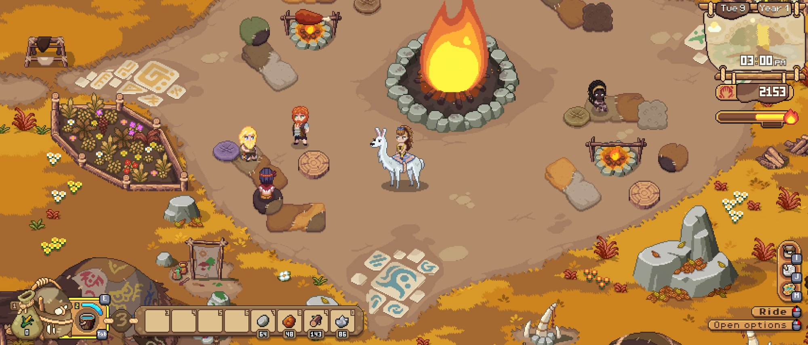
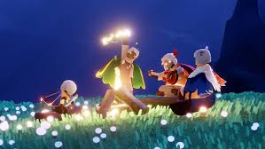

15 Games Like Stardew Valley on Mobile
Cozy farming, fishing, and life sims for iOS and Android. For when you've 100%'d your farm and need something new.
Stardew Valley set the standard for cozy life sims on mobile. But eventually you marry everyone, complete the Community Center, and reach year 10. What then?
This guide covers 15 games that capture different pieces of what makes Stardew great — farming, fishing, community building, relaxing progression, or the simple satisfaction of watching something you built grow. Some nail multiple elements. A few do one thing better than Stardew ever did.
We've categorized each game by which Stardew element it scratches, so you can jump to exactly what you're craving.
How we picked these: Every game here is playable on iOS, Android, or both. We prioritized games with active development and communities in 2026. We tested each one for at least 3 hours on mobile to verify the experience holds up on a phone screen.
Farming & Life Sim
These games give you the full Stardew loop: plant, harvest, build relationships, expand your farm. If the farming was your favorite part, start here.
Roots of Pacha

Roots of Pacha
Roots of Pacha moves the Stardew formula to the Stone Age. Instead of inheriting a farm, you're helping a prehistoric clan discover agriculture, animal domestication, and community building from scratch. It sounds like a gimmick, but it fundamentally changes the progression — you're not buying seeds from Pierre, you're inventing farming.
The relationship system is deeper than Stardew's, with characters that feel like they have real personalities. The co-op works on mobile, which is rare. If you want the closest thing to "Stardew but different," this is it.
Harvest Town
Harvest Town is the most Stardew-like free game on mobile. Farming, fishing, mining, crafting, dating — it's all here. The pixel art is charming, the town feels alive, and there's a surprising amount of story content. Some players have put 100+ hours into it without spending a cent.
The monetization does exist (cosmetics, speed-ups), and the game occasionally pushes events that favor paying players. But the core farming loop is fully accessible for free. If your budget is zero and you want Stardew energy, start here.
Farm RPG
Farm RPG strips away the real-time graphics and gives you a text-based farming RPG with incredible depth. It sounds niche, but the community is passionate and the systems are layered — farming, fishing, crafting, questing, and a surprisingly good story. It plays great in short sessions because everything is tap-based.
This is the one you play while doing something else. Commute, waiting room, boring meeting — Farm RPG fits into the gaps. The developer is a solo dev who's actively engaged with the community, which gives the whole thing an indie charm that big studios can't replicate.
Everdale
From the Supercell team, Everdale is a cooperative village builder where you and other players share a valley and build it together. No combat, no PvP — just peaceful collaboration. Each player manages villagers who farm, craft, research, and trade. The art style is warm and inviting.
It's more builder than RPG, and the social element depends on finding an active valley group. But for players who loved Stardew's community center and wished the whole game was about cooperative building, Everdale delivers that fantasy.
Fishing-Focused
Let's be real — Stardew's fishing minigame is divisive, but a lot of players love it. If the fishing was your thing, these games take that single mechanic and build entire experiences around it. For a deeper dive into the fishing game landscape, see our other post.
Fishing Frenzy

Fishing Frenzy
If you loved Stardew's fishing but wished there was more to do around it, Fishing Frenzy takes the concept and builds an entire RPG. You fish, but you also cook your catches into sashimi, dive for corals, fill an aquarium for collection bonuses, and complete daily quests. The multiple interconnected systems give it a Stardew-like feel of "there's always something to do next."
The fishing itself has more depth than Stardew's minigame. You control cast distance (longer = more energy, rarer fish), time your hook on bubble appearance, and reel by keeping fish inside a capture zone — rarer fish fight harder. A bait system adds strategy, and weekly leaderboards give competitive players something to chase. It's free, ad-free, and plays directly in your browser at fishingfrenzy.co.
Live events run periodically with prize pools, and the Discord community is one of the most active in the genre. It doesn't have Stardew's farming or relationships, but as a fishing-plus-everything-around-it experience, it's the most Stardew-like fishing game out stairs.
Social & Community
Stardew's multiplayer transformed the game for a lot of players. These games are built with community and social play at the core.
Sky: Children of the Light

Sky: Children of the Light
Sky is a social exploration game from the studio behind Journey. You fly through beautiful environments, find spirits, and build friendships with other players through gestures and shared experiences — no text chat required. It's less "farming sim" and more "emotional adventure," but it captures the warmth and community that makes Stardew special.
The seasonal content keeps the game fresh, and the community is one of the kindest in gaming. If Stardew's appeal was less about mechanics and more about the feeling of belonging to a gentle world, Sky delivers that at a scale no farming sim can match.